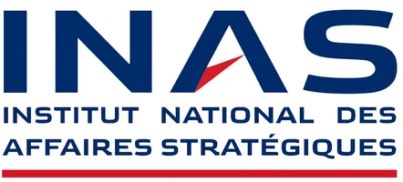
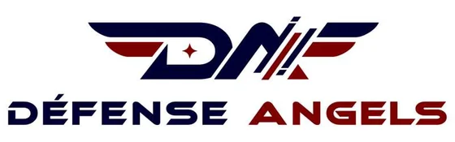
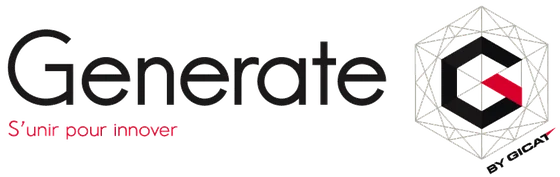
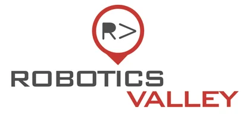
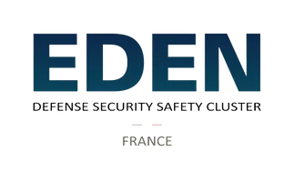
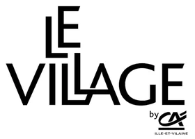
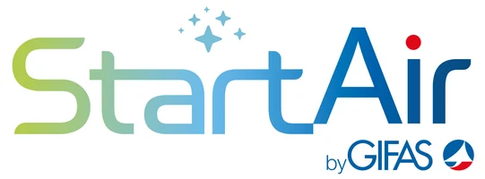
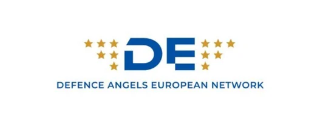

Robotique
Systèmes robotiques et autonomes
CandidaterPrix de l'innovation duale · Appel à candidatures · Septembre 2026
Le Prix de l'innovation duale porté par Paris Ouest La Défense vise à identifier, valoriser et accompagner les entreprises innovantes développant des technologies à fort potentiel de double usage, répondant à la fois aux besoins des marchés civils et aux enjeux de défense et de sécurité.
Un prix porté par Paris Ouest La Défense

L'établissement public territorial Paris Ouest La Défense (POLD) regroupe un pôle économique majeur en Île-de-France où l'innovation duale, des technologies à double usage civil et militaire, trouve un terreau fertile grâce à la concentration de milliers d'entreprises et d'acteurs stratégiques.
Cette initiative a pour ambition de favoriser les collaborations entre startups, entreprises technologiques, industriels, acteurs publics, collectivités et experts afin d'accélérer l'émergence de solutions stratégiques et de contribuer au renforcement de la souveraineté technologique.
Édition 2026 · Trois catégories, trois lauréats
Trois catégories ont été définies afin de couvrir des champs technologiques complémentaires. Dans tous les cas, la technologie candidate doit impérativement présenter un caractère dual, reposant sur des applications à la fois civiles et relevant de la défense ou de la sécurité.
Systèmes robotiques et autonomes
CandidaterInnovation et résilience sanitaire
CandidaterTechnologies de rupture
CandidaterPremières preuves de concept
Premières validations marché
Le Prix s'adresse prioritairement aux jeunes entreprises technologiques aux premiers stades de leur développement.
Dotation & accompagnement
Les trois lauréats bénéficieront d'une dotation financière ainsi que d'un accompagnement destiné à renforcer leur visibilité, faciliter les mises en relation et soutenir le développement de leur projet au sein de l'écosystème de l'innovation duale.
Chaque lauréat recevra une dotation de 5 000 euros destinée à contribuer au développement de son innovation et à la poursuite de ses prochaines étapes.
Les lauréats bénéficieront de mises en relation avec les écosystèmes de Paris Ouest La Défense, de l'INAS et de La Place Stratégique, afin de faciliter les connexions avec les acteurs pertinents pour leur développement.
Des rencontres pourront être organisées avec les collectivités du territoire, les membres du jury, les partenaires du Prix et les acteurs économiques ou institutionnels susceptibles d'accompagner le développement des projets sélectionnés.
Chaque lauréat bénéficiera d'un dispositif de valorisation comprenant une captation vidéo, un shooting photo et une mise en visibilité à l'occasion d'événements stratégiques.
Les modalités d'accompagnement seront définies avec chaque lauréat en fonction de son niveau de maturité, de ses besoins et de ses perspectives de développement, afin de mobiliser les dispositifs et interlocuteurs les plus pertinents.
Calendrier 2026
Sélectionnez une étape pour afficher les informations associées.
Été 2026 · Préparation
Finalisation du dispositif, des éléments de candidature et des supports de communication du Prix.
Septembre 2026 · Appel à candidatures
Ouverture officielle des candidatures pour les catégories Robotique, Santé et Deeptech.
Mi-octobre 2026 · Candidatures
Date limite de dépôt des dossiers pour participer à l'édition 2026 du Prix de l'innovation duale.
Mi-octobre à fin octobre · Sélection
Étude des dossiers reçus et sélection des projets appelés à poursuivre le processus devant le jury.
Novembre 2026 · Finale
Les finalistes présenteront leur projet devant les jurys de sélection de chacune des trois catégories.
Fin novembre 2026 · DualTech 2026
Annonce des trois lauréats et remise officielle des Prix à l'occasion de l'événement DualTech 2026.
Une initiative collective
Le Prix de l'innovation duale réunit des acteurs publics, institutionnels, industriels et financiers engagés au service de l'innovation stratégique et des technologies à double usage.







